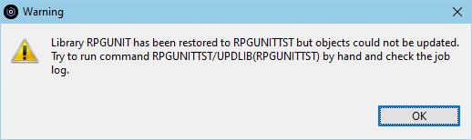

The following error may be displayed, when uploading the iRPGUnit library:

One or more objects could not be updated after the iRPGUnit library has been uploaded to the host.
The problem is, that the iRPGUnit programs that bind to service program RUTESTCASE do not search the library list for the first match, but are hard-coded to RUTESTCASE in library RPGUNIT. Hence when library RPGUNIT is uploaded using a different name, service program RUTESTCASE cannot be found.
In order to solve that problem, iRPGUnit attempts to re-bind the programs after the library was uploaded.
Go to a CL command line and add your iRPGUnit library to the library list. Then execute command UPDLIB to update the iRPGUnit objects:
UPDLIB LIB(irpgunit-library)
Check the job log for errors. If you cannot solve the problem, try to compile the iRPGUnit library by hand as explained on page Installation.